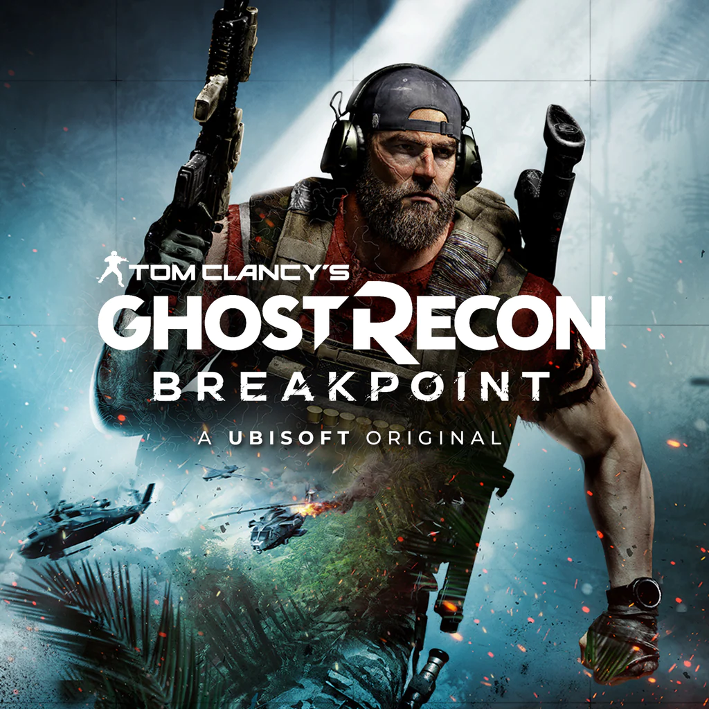
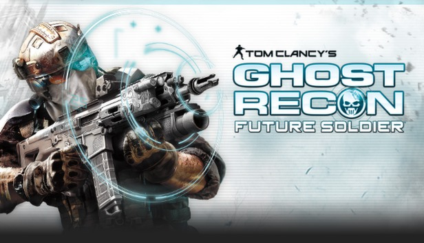

Wildlands
A história de "Ghost Recon Wildlands" se passa em uma versão fictícia da Bolívia, onde um poderoso cartel de drogas conhecido como Santa Blanca assumiu o controle do país. O cartel é liderado pelo carismático e brutal El Sueño, que busca transformar a Bolívia em um estado narcotraficante dominado pelo terror.
Os jogadores assumem o papel de um Ghost, um membro de uma unidade de elite das Forças Especiais dos Estados Unidos, enviada para desmantelar o cartel de Santa Blanca. A missão dos Ghosts é eliminar os líderes do cartel, interromper sua produção de drogas e desestabilizar suas operações em todo o país.
O jogo permite que os jogadores explorem um vasto mundo aberto, completo com uma variedade de biomas, desde montanhas nevadas até selvas densas e desertos áridos. Os jogadores podem completar missões principais e secundárias de várias maneiras, utilizando táticas furtivas, ação direta ou uma combinação de ambas.

Breakpoint
A história se passa em Auroa, uma ilha fictícia do Pacífico controlada pelo magnata da tecnologia e ex-oficial das Forças Armadas dos Estados Unidos, Jace Skell. Skell transformou a ilha em um paraíso tecnológico, mas ela é tomada por um grupo paramilitar chamado Wolves, liderado pelo ex-ghost Cole D. Walker, interpretado por Jon Bernthal.
Os jogadores assumem o papel de um Ghost, um membro de elite de uma unidade de operações especiais dos Estados Unidos, enviado para Auroa para investigar o desaparecimento de outro grupo de Ghosts liderado pela capitã Weaver. Ao chegar na ilha, o helicóptero dos Ghosts é abatido, e o protagonista, interpretado pelo jogador, é deixado para trás e gravemente ferido.
O Ghost sobrevive e descobre que Auroa está agora sob o controle dos Wolves, que se voltaram contra Skell e sua corporação, tomando controle de suas instalações e utilizando a tecnologia avançada para seus próprios fins. O enredo desenrola-se enquanto o Ghost se infiltra nas linhas inimigas, forma alianças com os sobreviventes e descobre a verdade por trás da conspiração que envolve não só os Wolves, mas também figuras poderosas dentro do governo dos Estados Unidos.
Rainbow Six Siege
Ele se destaca por seu foco intenso em estratégia, cooperação e destruição de ambientes. A história do jogo não é central, mas existe um contexto em torno das operações especiais das unidades anti-terroristas conhecidas como Rainbow.
O enredo gira em torno de uma organização terrorista conhecida como White Masks, que está envolvida em vários ataques terroristas em todo o mundo. Os jogadores assumem o papel de operadores das forças especiais Rainbow, recrutados de diferentes unidades ao redor do mundo, como SAS, FBI SWAT, GIGN, Spetsnaz, GSG-9, entre outros.
Cada operador tem habilidades e itens únicos que podem ser usados para cumprir os objetivos da missão, que geralmente envolvem resgate de reféns, desativação de bombas, entre outros cenários típicos de operações anti-terroristas.
Embora não haja uma campanha linear no jogo, a narrativa é transmitida por meio de missões especiais chamadas de "Situações" e cutscenes que apresentam os operadores e o contexto das operações.

future soldier
Apresenta uma história ambientada em um futuro próximo, onde as forças especiais Ghost enfrentam ameaças globais em cenários de guerra modernos.
A história se desenrola em um mundo onde o equilíbrio de poder está mudando rapidamente, com novas ameaças emergindo e tecnologias avançadas sendo cada vez mais importantes no campo de batalha. Os Ghosts, uma unidade de operações especiais altamente treinada e equipada, são enviados para uma série de missões secretas em várias partes do mundo para combater ameaças e proteger os interesses dos Estados Unidos.
A trama principal do jogo gira em torno de uma operação dos Ghosts para investigar e neutralizar uma organização criminosa conhecida como "Raven's Rock", que está por trás de uma série de ataques terroristas globais. A Raven's Rock é uma ameaça extremamente perigosa, e os Ghosts são encarregados de rastrear seus líderes e desmantelar sua infraestrutura antes que possam causar mais danos.
Quem foi Tom clancy
Thomas Leo Clancy Jr foi um aclamado autor norte-americano conhecido principalmente por seus romances de suspense e ficção militar. Nascido em 12 de abril de 1947 em Baltimore, Maryland, e falecido em 1º de outubro de 2013, Clancy tornou-se um ícone no mundo da literatura, especialmente no gênero de thriller militar e político.
Tom Clancy tem uma ligação significativa com a franquia Ghost Recon, embora não tenha sido o criador direto dela. A série Ghost Recon foi desenvolvida pela Red Storm Entertainment, uma empresa de jogos co-fundada por Clancy em 1996. Embora Clancy não tenha sido o designer principal dos jogos da série Ghost Recon, seu nome e influência estiveram intimamente ligados a eles devido à associação com a Red Storm Entertainment.
Clancy era conhecido por sua profunda pesquisa e conhecimento sobre assuntos militares e de inteligência, que eram temas centrais nos jogos Ghost Recon. Sua visão de narrativas realistas e envolventes, juntamente com seu interesse por tecnologia militar, contribuiu para a criação do universo Ghost Recon. Embora Clancy não estivesse diretamente envolvido no desenvolvimento de cada jogo da série, sua marca registrada de autenticidade e complexidade narrativa foi uma influência-chave na concepção e na atmosfera dos jogos.
A franquia Ghost Recon é conhecida por seu foco em operações militares táticas e realistas, bem como pela exploração de temas geopolíticos e de segurança nacional. Os jogos frequentemente apresentam enredos envolvendo ameaças globais, unidades de operações especiais de elite e tecnologia de ponta.
A ligação de Tom Clancy com a série Ghost Recon ajudou a estabelecer a credibilidade e a autenticidade dos jogos, atraindo fãs que valorizam histórias bem fundamentadas e ação militar realista. Embora Clancy tenha falecido em 2013, seu legado continua a influenciar não apenas a série Ghost Recon, mas também outros trabalhos relacionados ao mundo da ficção militar e do thriller político.